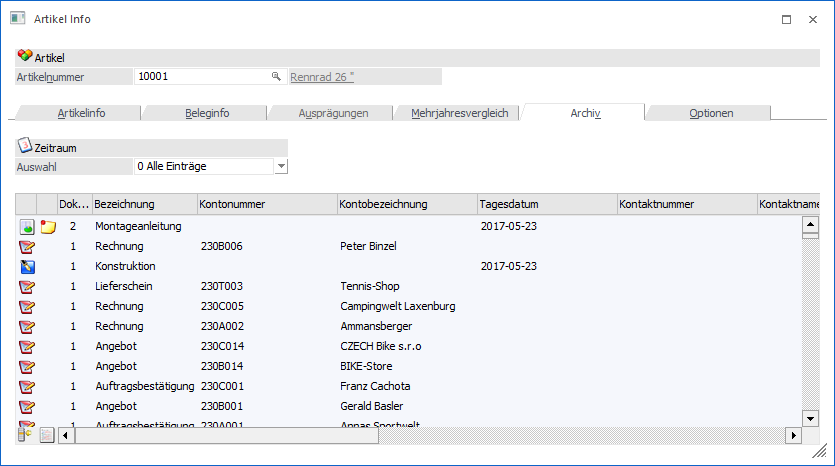
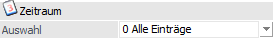
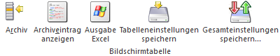

Durch Anwahl des Registers "Archiv" können alle Archiveinträge angesehen werden, die zu diesem Artikel vorhanden sind. Voraussetzung dafür ist, dass das Programm WinLine ARCHIV eingesetzt wird.
Hinweis
In dieser Archivanzeige werden nur die Einträge des aktuellen Mandanten angezeigt. Wenn die Einträge von allen Mandanten angezeigt werden sollen, so muss über die Archivsuche ausgewertet werden.

Zeitraum

Ø Auswahl
Über die Auswahlliste kann auf Grundlage des Archivdatums der Umfang der Dokumente definiert werden, welche angezeigt werden sollen. Dabei stehen folgende Optionen zur Verfügung:
ü 0 - Alle Einträge
ü 1 - das letzte Jahr
ü 2 - das letzte Halbjahr
ü 3 - das letzte Quartal
ü 4 - das letzte Monat
ü 5 - die letzte Woche
ü 6 - heute
Tabelle "Archiv"
Neben der Anzahl der Dokumente und den Schlagwörtern werden in der Tabelle noch folgende Spalten angezeigt:
ü Dokumenten-ID
Hierbei handelt
es sich um eine interne fortlaufende Nummer.
ü Mandant
Es wird der jeweilige
Mandant angezeigt, in dem das Dokument archiviert wurde.
ü Versionsnummer
Gibt es mehrere
Versionen eines Dokumentes, kann aus der Auswahlbox die gewünschte Version
gewählt werden.
ü Formulartyp / -name
Durch
Auswahl eines Eintrages aus der Auswahllistbox kann dem jeweiligen Dokument ein
Formulartyp zugeordnet werden. Voraussetzung, um Formulartypen in der
Auswahllistbox zu erhalten ist, dass solche angelegt sind, und der Benutzer die
Berechtigung hat, diese zu benützen.
ü Berechtigung
Anzeige des
hinterlegten Berechtigungsprofils für den verwendeten Formulartyp.
ü Herkunft
Jeder Archiveintrag
hat eine spezifische Herkunft (manuelle Archivierung, CRM-Dokument, Beleg Pro,
E-Rechnung, etc.). In dieser Spalte wird hierüber Auskunft gegeben.
Tabellenbuttons

Ø Archiv
Durch Anwählen des Archiv-Buttons wird die Archivsuche geöffnet, wobei die Schlagwörter "Artikelnummer" sowie "Mandant" bereits mit den Werten vorbelegt werden.
Ø Archiveintrag anzeigen
Wird dieser Button angewählt, wird die jeweilige Applikation gestartet und das Dokument darin dargestellt. D.h. handelt es sich um eine SPL-Datei wird der Spoolviewer geöffnet; handelt es sich z.B. um ein Word-Dokument, wird MS-Word geöffnet.
Ø Ausgabe Excel
Durch Anwahl des Buttons "Ausgabe Excel" wird der Inhalt der Tabelle nach Microsoft Excel übergeben.
Ø Tabelleneinstellungen speichern
Die Spalten einer Tabelle können grundsätzlich an beliebige Positionen verschoben, bzw. in der Breite entsprechend angepasst werden. Durch Anwahl des Buttons "Tabelleneinstellungen speichern" werden die Einstellungen benutzerspezifisch gespeichert und bei dem nächsten Aufruf des Programmpunktes wieder vorgeschlagen.
Ø Gesamteinstellungen speichern
Im Gegensatz zu "Tabelleneinstellungen speichern" können mit "Gesamteinstellungen speichern" mehrere Tabellenaufbauten gespeichert und nach Wunsch geladen werden. Zusätzlich werden Sonderfunktionen der Tabelle (z.B. "Spalte gruppieren") ebenfalls bei der Speicherung bedacht.